Final answer: B — the food tastes weird.
"can't close my mouth"
Top hit frame 1672, plus other mouth-open matches.
Frames 1650-1700:
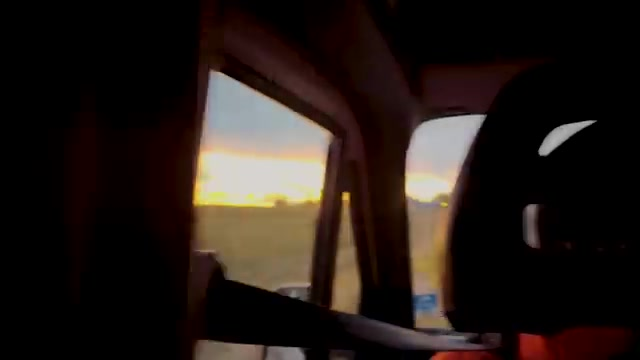 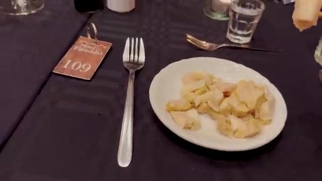 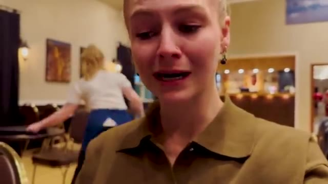 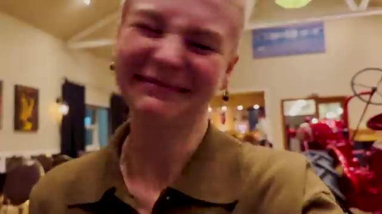 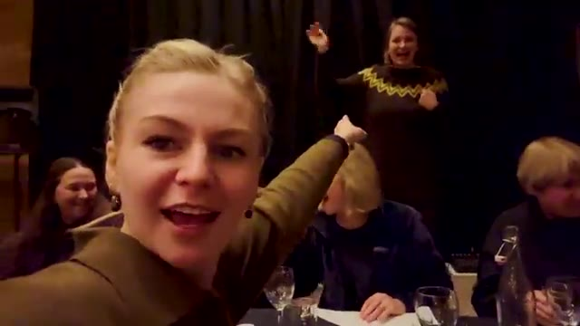 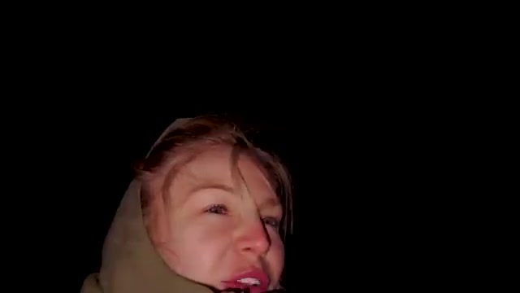
VLM says surprise/disgust — supports weird taste.
Frames 1665-1710:
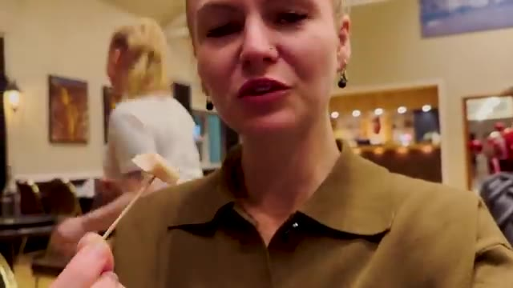 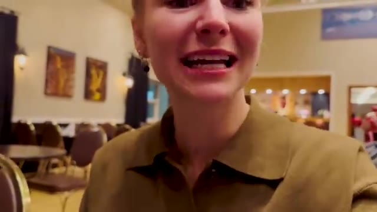 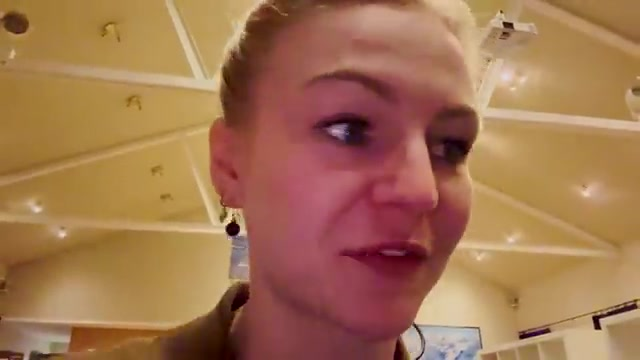 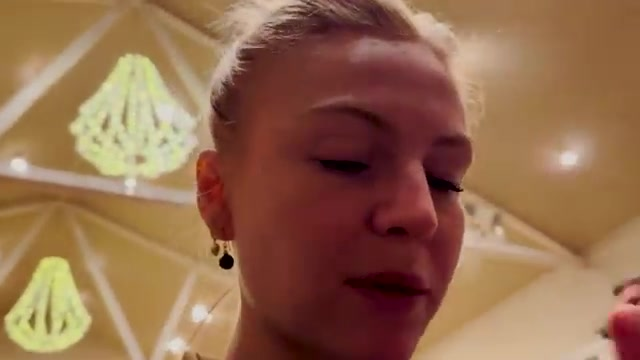 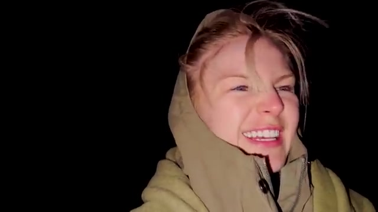 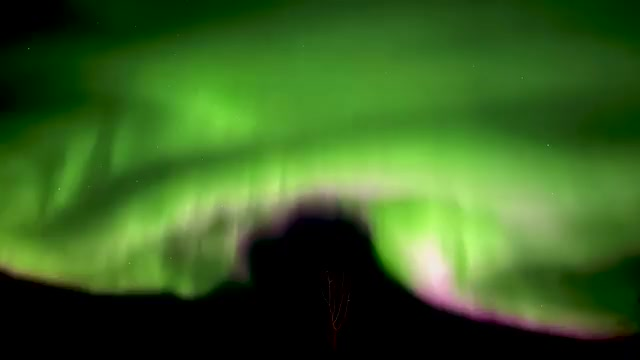
Further confirmation: facial reaction = unusual taste.